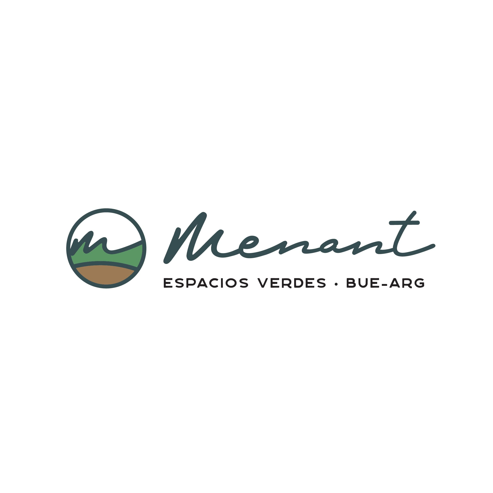

<!doctype html>
<html lang="en">
  <head>
    <meta charset="utf-8">
    <meta name="viewport" content="width=device-width, initial-scale=1">
    <meta name="description" content="Diseño y Paisajismo. Asesoramiento técnico. Mantenimiento de espacios verdes. Instalacion de Riego Automático. Paisajismo y Parquizaciones. Cesped.">
    <meta name="keywords" content="mantenimiento, Menant, espacios verdes, paisajismo, colocacion de cesped, cesped, plantas, flores, macetas, parquizacion, terrazas, balcones, diseño de jardines, poda, poda en altura, jardines verticales, riego automatico, riego,">
    <meta property="og:title" content="Menant Espacios verdes">
    <meta property="og:type" content="Web site">
    <meta property="og:url" content="www.menant.ar/prueba">
    <link rel="apple-touch-icon" sizes="180x180" href="/apple-touch-icon.png">
    <link rel="icon" type="image/png" sizes="32x32" href="./favicon_io/favicon-32x32.png">
    <link rel="icon" type="image/png" sizes="16x16" href="./favicon_io/favicon-16x16.png">
    <link rel="manifest" href="/site.webmanifest">

    <link href="https://cdn.jsdelivr.net/npm/bootstrap@5.3.1/dist/css/bootstrap.min.css" rel="stylesheet" integrity="sha384-4bw+/aepP/YC94hEpVNVgiZdgIC5+VKNBQNGCHeKRQN+PtmoHDEXuppvnDJzQIu9" crossorigin="anonymous">

        <!-- Style- css-->

        <link rel="stylesheet" href="./css/style.css">
        <title>Home</title>
    
  </head>
  <body>
    <script src="https://cdn.jsdelivr.net/npm/bootstrap@5.3.1/dist/js/bootstrap.bundle.min.js" integrity="sha384-HwwvtgBNo3bZJJLYd8oVXjrBZt8cqVSpeBNS5n7C8IVInixGAoxmnlMuBnhbgrkm" crossorigin="anonymous"></script>
  </body>
</html>

<body>

    <!-- Encabezado- Logo + nav bar -->

    <header class="encabezado">

        <!--logo menant-->
        <a href="./index.html">
            

        </a>
        
        <!--nav bar-->
        <nav class="menu-container">

            <ul class=menu>
                <li class="lista">
                    <a href="./index.html">Home</a>
               </li>
  
                <li class="lista">
                     <a href="./pages/proyectos.html">Proyectos</a>
                </li>
  
                <li class="lista">
                    <a href="./pages/servicios.html">Servicios</a>
               </li>
  
                <li class="lista">
                    <a href="./pages/nosotros.html">Nosotros</a>
                </li>
           
                <li class="lista">
                    <a href="./pages/contacto.html">Contacto</a>
                </li>      
            </ul>
        </nav>
      </header>

      <!-- Main- Foto grande + 3 títulos -->  

    <main class="main">

        <div class="foto-principal">
            
        </div>

        <div class="cuerpo">
            <section class="titulos">
            
                <li class="lista-titulo">
                    <a href="#titulo-uno">Diseño y paisajismo</a>
                </li>
                
                <li class="lista-titulo">
                    <a href="#titulo-dos">Asesoramiento técnico</a>
                </li>
                
                <li class="lista-titulo">
                    <a href="#titulo-tres">Mantenimiento de espacios verdes</a>
                </li>
            </section> 
            
            <section class="parrafos">

                <h1 id="titulo-uno">
                    Diseño y Paisajismo
                </h1>

                <p id="parrafouno">
                    Nos especializamos en el servicio completo de diseño de jardines, ofreciendo soluciones personalizadas para cada espacio exterior. Nuestro equipo de expertos paisajistas combina creatividad y conocimientos técnicos para crear paisajes que cautivan los sentidos y enriquecen la vida diaria. Desde la conceptualización hasta la instalación, nos encargamos de cada detalle, incorporando plantas exquisitas, elementos arquitectónicos y sistemas de riego eficientes. Ya sea que desees un jardín contemporáneo, un paraíso tropical o un rincón sereno, estamos aquí para hacerlo realidad. ¡Descubre el potencial de tu espacio exterior con nosotros!
                </p>

                <h2 id="titulo-dos">
                    Asesoramiento técnico
                </h2>

                <p id="parrafodos">
                    En Menant, no solo creamos jardines extraordinarios, sino que también ofrecemos un servicio integral de asesoramiento técnico. Con años de experiencia en el campo del paisajismo, proporcionamos orientación experta para optimizar la funcionalidad y la estética de tu espacio exterior. Nuestro servicio de asesoramiento técnico se basa en un profundo conocimiento de las plantas, materiales y técnicas de construcción, asegurando soluciones prácticas y sostenibles. Ya sea que necesites orientación sobre el diseño del paisaje, la elección de plantas adecuadas o la instalación de sistemas de riego eficientes, estamos aquí para ayudarte. Confía en nosotros para convertir tus ideas en una realidad vibrante y duradera.
                </p>

                <h3 id="titulo-tres">
                    Mantenimiento de espacios verdes
                </h3>

                <p id="parrafotres">
                    En Menant, nos apasiona preservar la exuberancia de tus espacios verdes. Nuestro servicio de mantenimiento de jardines es un compromiso con la duradera belleza natural. Desde el corte de césped hasta la atención minuciosa de cada flor, nuestros jardineros expertos se dedican a mantener la vitalidad y el color de tu jardín en todas las estaciones. Además de cuidar de las plantas, nos ocupamos de la salud del suelo y gestionamos sistemas de riego eficientes para un florecimiento continuo. Con Menant, puedes confiar en que tu jardín será un testimonio vivo de nuestro cuidado meticuloso y pasión por la naturaleza, permitiéndote disfrutar de un espacio verde perfectamente mantenido sin preocupaciones.
                </p>
            </section>
        </div>
    </main>

    <!-- Pie de página- Links de redes y contacto -->

    <footer class="piedepagina">

        <section class="algo">

            <p class="parrafo-uno">
                Sobre Menant
                <br>
                <br>
                Nos encanta transformar lugares y diseñar soluciones para la vida cotidiana.
            </p>
        </section> 

        <section class="enlaces">
            <ul>
                <li class="paginas">
                    <a href="https://linkedin.com" target="_blank">
                        
                    </a>
                </li>
            
                <li class="paginas">
                    <a href="https://instagram.com/menant.paisajismo" target="_blank">
                        
                    </a>
                </li>
            
                <li class="paginas">
                    <a href="https://whatsapp.com" target="_blank"> 
                        
                    </a>
                </li> 
            </ul>
    
 
        </section> 
     
        <section class="algo">
            
            <span class="alguito-uno">
                Contacto
            </span>
        
            <span class="alguito">
                Tel: +54 11 6530 6169
            </span>
        
            <span class="alguito">
                Tel: +54 11 3697 7845
            </span>
        
            <span class="alguito">
                Mail: info@menant.ar
            </span>
        </section>
    </footer>  
</body>

</html>


